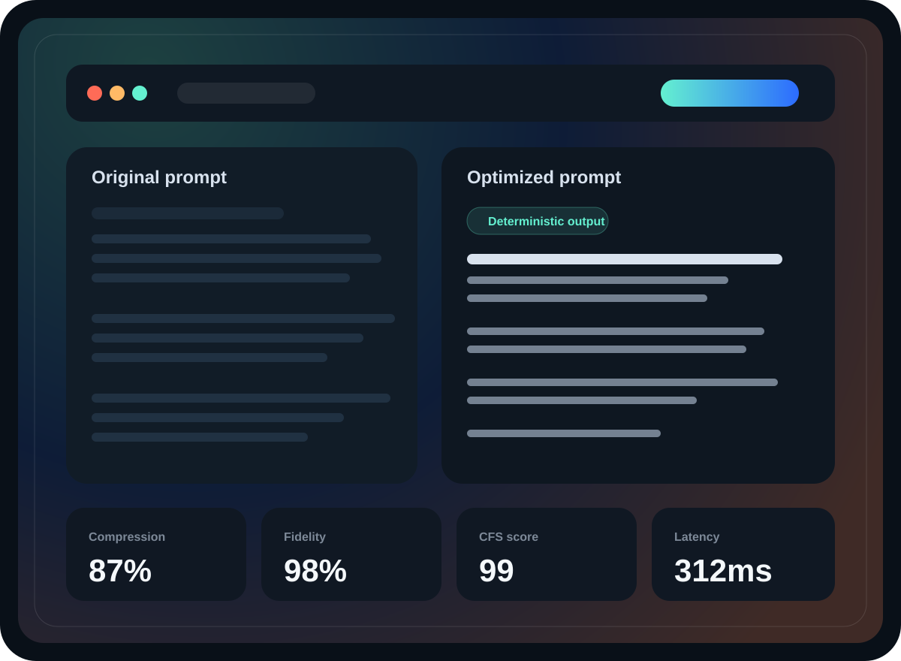
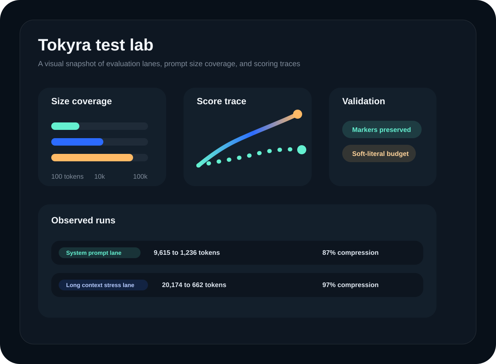
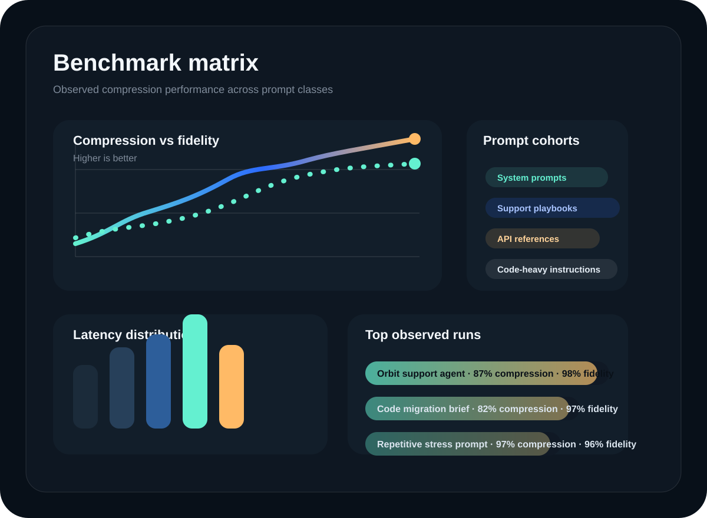

Production prompt compression
Reliable prompt compression with visible proof.
Tokyra strips out bloat, keeps the instructions that matter, and returns the compression, fidelity, and CFS evidence teams need before a prompt ever reaches production.
Command center
Compression that leaves receipts behind.
Every run ships with the proof layer: token deltas, fidelity scoring, and benchmark-friendly outputs.
Live eval posture

Literal protection
Structured fallback
Long-context safe
Metrics-first output
Core system
The compression layer for prompts that actually matter.
Tokyra is built for long system prompts, support playbooks, policy documents, runbooks, and agent instructions that need aggressive reduction without losing the parts that define behavior.
Preserve the contract
Hard literals, markers, versions, endpoints, and policy constraints stay protected instead of getting compressed into mush.
- Protects exact spans and critical literals before rewriting.
- Rejects shorter candidates when they violate the prompt contract.
- Uses deterministic recovery paths instead of silently failing.
Compress with evidence
The output is not just shorter. It is benchmarkable, reviewable, and easy to compare across prompt classes.
- Returns original tokens, optimized tokens, savings, fidelity, and CFS.
- Works for prompts ranging from short support flows to 100k-token stress tests.
- Provides a stable surface for evals and prompt iteration.
Designed like a product
No more broken placeholder pages. Tokyra now has a full frontend system for product, compression, and benchmark views.
- Shared design language across the landing page, compressor, and metrics hub.
- Visual benchmark imagery and stronger hierarchy for proof sections.
- Responsive layouts with motion that supports the story instead of distracting from it.
Workflow
From prompt sprawl to benchmarked output.
Tokyra treats compression like a reliability problem: trim the fluff, preserve the behavior, score the result, and make the outcome legible to the people shipping it.
- Protect code fences, structured literals, and behavior-defining fragments before any reduction happens.
- Run deterministic compaction first so redundant prose and repeated framing get stripped quickly.
- Escalate to model-based compression only when it helps, and validate the candidate before accepting it.
- Return the winning candidate with the metrics needed to compare runs and catch regressions.

100-token prompt checks
10k support prompt lane
100k stress lane
Benchmark gallery
Metrics that look like a system, not a side note.
The UI now gives the results room to breathe: benchmark imagery, scoreboards, and a dedicated metrics page so Tokyra can show its work the way a serious AI product should.
Command center
A product-level view of the compression pipeline, output quality, and run-level metrics.

Benchmark matrix
Compression and fidelity visualized across multiple prompt cohorts and observed runs.
Test lab
Coverage across prompt sizes, validation lanes, and high-signal examples for review.
Ready to test
Run your own prompt, then inspect the metrics like a product team.
Tokyra now has a cleaner frontend, a stronger narrative, and a more useful benchmark surface. Drop in a system prompt, compare the output, and use the metrics page to judge whether the compression is worth shipping.